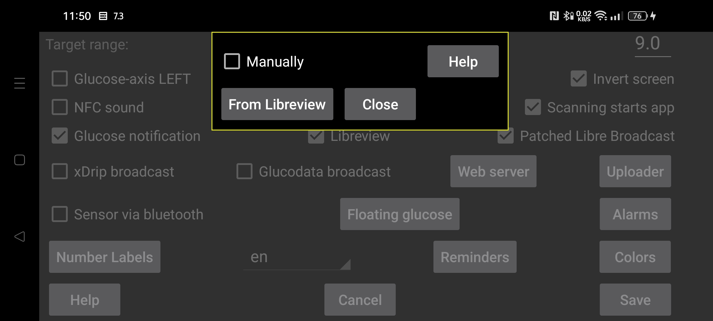

ar be de es fa fr hi it ja ko nl pl ru tr uk uz zh en
چگونه شناسهٔ حساب LibreView مورد نیاز برای اسکن NFC حسگر FreeStyle Libre 3 را به دست آوریم؟ اگر گزینهٔ «دستی» را فعال کنید، میتوانید شناسه را خودتان وارد کنید. در غیر این صورت «از LibreView» را بزنید تا Juggluco با ایمیل و گذرواژهٔ حساب، شناسه را از LibreView بگیرد.
همچنین میتوانید نخست شناسه را از LibreView بگیرید، سپس «دستی» را روشن کنید و ایمیل و گذرواژهٔ LibreView را تغییر دهید. اگر بعداً «ارسال به LibreView» را فعال و «ارسال دوبارهٔ دادهها» را انتخاب کنید، دادهها به حساب جدید فرستاده میشوند، اما برای اسکن NFC حسگر همچنان شناسهٔ قبلی/دستی استفاده میشود. به این ترتیب دادههای Juggluco میتوانند به حسابی متفاوت از حسابی که برنامهٔ Libre 3 شرکت Abbott استفاده میکند فرستاده شوند.